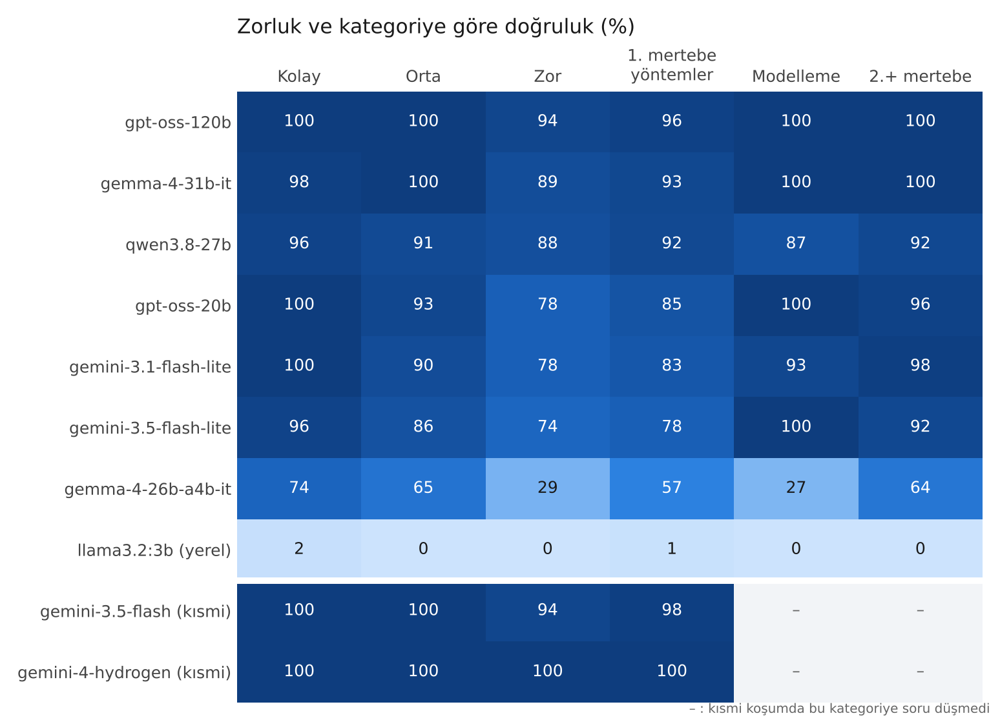
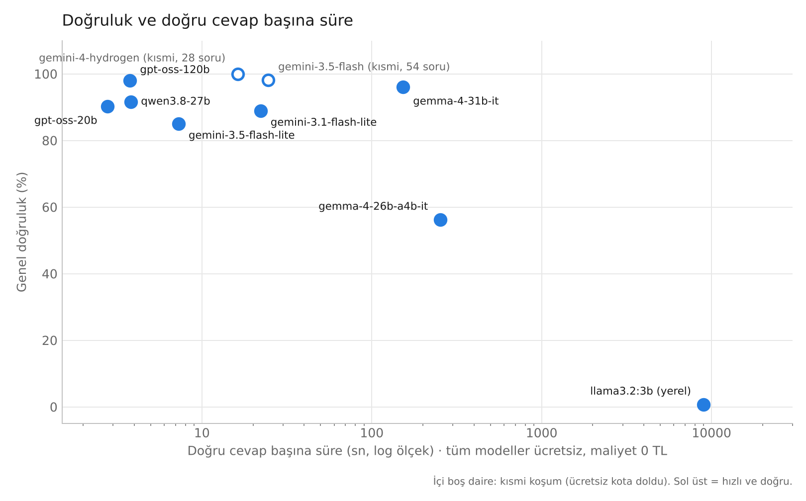

Diferansiyel denklemler dersinden hazırladığım, her sorunun cevabı tek bir sayı olan 153 soruluk bir benchmark. Bu benchmark'la 10 dil modelini aynı koşullarda test ettim.
| Soru | 153 (102 insan + 51 AI) |
| Kategori | 1. mertebe yöntemler (86) · Modelleme ve uygulama (15) · 2. ve yüksek mertebe (52) |
| Zorluk | 47 kolay · 57 orta · 49 zor (%32 zor) |
| Model | 10 model, 4 firma (Google, OpenAI, Alibaba, Meta), 6 açık ağırlıklı |
| Koşul | Aynı prompt, temperature 0, her soru ayrı istek, puanlama kodla ve ham çıktıdan |
| Maliyet | 0 TL (Google AI Studio, Groq ve yerel Ollama ücretsiz katmanları) |
| Model | Genel | İnsan | AI | Zor |
|---|---|---|---|---|
| gpt-oss-120b | 98,0 | 98,0 | 98,0 | 93,9 |
| gemma-4-31b-it | 96,0 | 96,0 | 96,0 | 89,4 |
| qwen3.8-27b | 91,5 | 92,2 | 90,2 | 87,8 |
| gpt-oss-20b | 90,2 | 93,1 | 84,3 | 77,6 |
| gemini-3.1-flash-lite | 88,9 | 88,2 | 90,2 | 77,6 |
| gemini-3.5-flash-lite | 85,0 | 84,3 | 86,3 | 73,5 |
| gemma-4-26b-a4b-it | 56,2 | 51,0 | 66,7 | 28,6 |
| llama3.2:3b (yerel) | 0,7 | 0,0 | 2,0 | 0,0 |

Küçük modeller yanlış hesap yapmıyor, cevaba hiç varamıyor. Aynı 8.000 token'lık bütçede CEVAP satırına ulaşamama oranları: llama3.2:3b %88, gemma-4-26b %42, gpt-oss-20b %7, gpt-oss-120b <%1. gemma-4-26b bir soruda 0,73205'in nasıl yuvarlanacağını tartışırken bütçeyi bitirdi. llama3.2:3b ise "Step 153, Step 154…" diye bir döngüye girdi. Yani bu benchmark matematiğin yanında talimata uymayı ve verimli düşünmeyi de ölçüyor.

Gizli setteki 10 ders kitabı sorusunu kelimelerini değiştirerek (matematiği aynı bırakarak) tekrar sordum. Toplam doğruluk %90'dan %82'ye düştü. En büyük model hiç etkilenmedi. Kayıplar, çözümü kitapta bulunan zor sorularda toplandı. Bu ezberle uyumlu bir işaret, ama örneklem küçük.
llama3.2:3b'yi RTX 4060 dizüstü bilgisayarımda Ollama ile çalıştırdım: 2,6 GB model, internet yok, maliyet 0 TL. Aynı 30 soruda %0 aldı, en iyi bulut modeli ise %100. "2+3" gibi tek adımlı işlerde yeterli, ama çok adımlı hesapta döngüye giriyor.